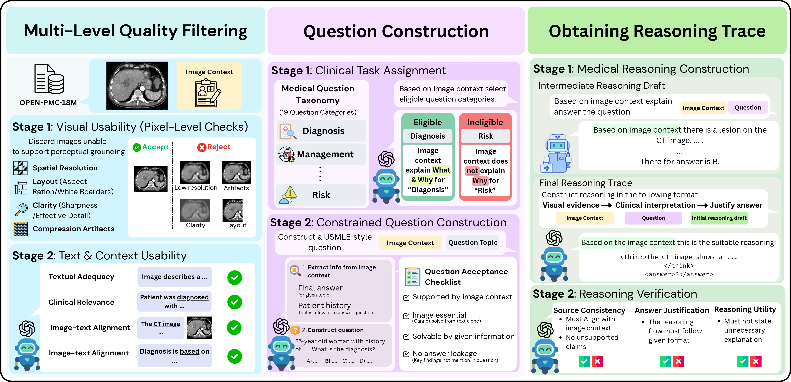
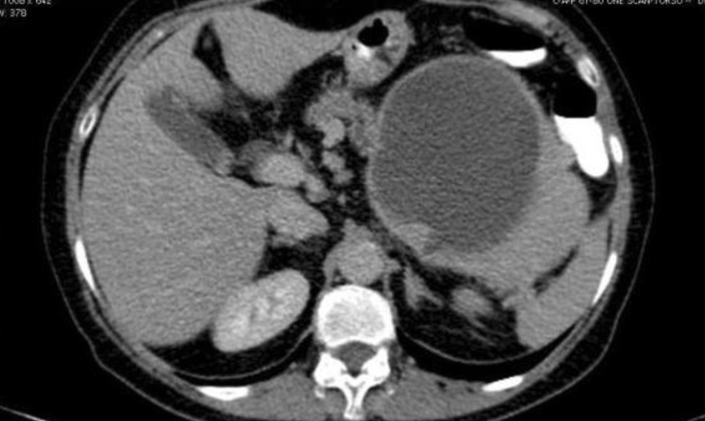

Scientific reasoning supervision for medical vision–language models
Abstract
Medical vision–language models are usually judged only on whether their final answer is correct. OpenMedReason is an open set of 196K medical image–question–answer instances whose reasoning traces are grounded in real, human-authored biomedical articles rather than synthetic chains of thought, keeping the reasoning close to genuine clinical evidence instead of purely a model's priors. We pair it with OpenMedReason-Bench, a benchmark that scores a model's reasoning along three axes: perception, medical knowledge, and rationale.
How the data is built
Three stages turn raw biomedical figures into leak-free clinical questions with verified, source-grounded reasoning traces: filter what's usable, construct the question, then build and check the trace.


Caption. Enhanced CT shows a cystic lesion in the tail of the pancreas.
Context. A 63-year-old woman was admitted with a one-week history of nausea and vomiting after meals. Enhanced-contrast CT revealed a mass with solid and cystic components in the tail of the pancreas. CA19-9 was increased to 222 U/ml (ref 0–27). Because a malignant pancreatic tumor was suspected, the patient underwent a distal pancreatectomy and splenectomy.
A 63-year-old woman has 1 week of postprandial nausea and vomiting. Her CA19-9 level is 222 U/mL. Given the CT image, what is the most appropriate next step in management?
The PKR benchmark
OpenMedReason-Bench converts each reference trace into a checklist of atomic Perception / Knowledge / Rationale units. A candidate trace is probed twice per unit: presence (did it raise the topic?) and correctness (did it state it accurately?).
Presence lives in [0,1] over all units; correctness is measured only over units the model actually engaged with, so omissions and misstatements are penalized separately.
Case: a 3D pelvic reconstruction. Question: are the findings normal or abnormal? Answer: B (Abnormal).
Same task, same final format, but PKR exposes that the base model never surfaced the fracture evidence, so its "normal" verdict is unsupported.
Results
| Model | OMR-Bench | SLAKE | VQA-RAD | PathVQA | PMC | JAMA | Avg |
|---|---|---|---|---|---|---|---|
| MedVL-Thinker 7B | 52.03 | 75.00 | 70.02 | 63.10 | 53.31 | 38.20 | 53.64 |
| QoQ-Med-VL 7B | 47.86 | 75.85 | 73.21 | 64.12 | 51.39 | 38.09 | 53.13 |
| Qwen2.5-VL-7B (base) | 47.11 | 62.26 | 67.13 | 63.88 | 49.60 | 35.34 | 49.71 |
| + OpenMedReason | 78.51 | 85.10 | 72.51 | 64.10 | 55.20 | 39.97 | 60.04 +20% |
| Model | Perception | Med. Knowledge | Rationale | Trace | Answer Acc. |
|---|---|---|---|---|---|
| gpt-5-mini | 61.9 | 70.8 | 80.2 | 70.9 | 67.7 |
| gemini-3-flash | 64.6 | 69.6 | 77.3 | 70.5 | 72.0 |
| Qwen2.5-VL-7B (base) | 34.3 | 34.5 | 43.5 | 37.4 | 47.1 |
| + OpenMedReason | 65.2 | 85.0 | 83.1 | 77.8 | 78.5 |
Vs. the same backbone before post-training, presence improves by +29 to +42 points across the three axes: the model learns which visual and clinical cues matter, then GRPO sharpens correctness.
Get started
# Load OpenMedReason from the Hub
from datasets import load_dataset
ds = load_dataset("neginb/OpenMedReason")
ex = ds["test"][0]
# image · question · options · answer · trace
print(ex["question"])
print(ex["answer"])
print(ex["reasoning_trace"])# PKR trace score = ½ Σ presence·correct
def trace_score(units):
axes = ["perception",
"knowledge",
"rationale"]
s = 0.0
for a in axes:
U = [u for u in units if u.axis == a]
pres = mean(u.presence/2 for u in U)
seen = [u for u in U if u.presence >= 1]
corr = mean(u.correct == 1 for u in seen)
s += pres * corr
return 0.5 * sPresence pᵢ ∈ {0,1,2}, correctness cᵢ ∈ {−1,0,+1}; correctness is scored only over present units.
Citation
@article{baghbanzadeh2026openmedreason,
title = {OpenMedReason: Scientific Reasoning Supervision for
Medical Vision--Language Models},
author = {Baghbanzadeh, Negin and Sarkar, Pritam and Colacci, Michael
and Badawi, Abeer and Fallahpour, Adibvafa and Afkanpour, Arash
and Sigal, Leonid and Etemad, Ali and Dolatabadi, Elham},
journal = {arXiv preprint arXiv:2606.12169},
year = {2026}
}
Correspondence: neginb@yorku.ca · Dataset & code: huggingface.co/datasets/neginb/OpenMedReason